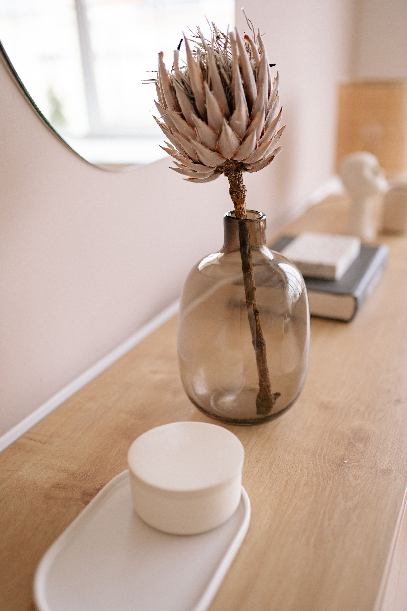

In This Article
- Introduction
- Distinguish Condensation, Leaks, and Other Sources of Moisture
- Improve Ventilation in Bathrooms, Kitchens, and Bedrooms
- Reduce Condensation on Windows and Cold Surfaces
- Detect Leaks and Water Penetration Before Damage Spreads
- Control Humidity Without Hiding the Problem
- Follow Up During the Next Few Weeks
- Frequently Asked Questions
- Conclusion
Introduction
Reducing excess humidity at home starts with identifying where the moisture comes from. Condensation, plumbing leaks, rain penetration, ground moisture, and everyday activities can create similar stains but require different solutions.
Observe when and where the problem appears before painting, sealing, or buying equipment. Temperature, ventilation, building materials, weather, and household habits all influence indoor moisture.
Distinguish Condensation, Leaks, and Other Sources of Moisture
Condensation commonly appears on cold windows, exterior-wall corners, and bathroom surfaces when humid indoor air meets a surface below its dew point. A leak or rain penetration behaves differently and usually follows a plumbing route, roof defect, facade crack, or weather event.
Look for patterns. Moisture after showers points toward indoor vapor; a stain that expands after rain may indicate water entering from outside; dampness beside a pipe can indicate a plumbing leak.
Do not simply paint over a stain. A new coating may hide the symptom while plaster, wood, insulation, or another material continues to deteriorate.
A hygrometer can help you compare relative humidity between rooms and times of day. One reading is not enough, so record values for several days and compare them with cooking, showering, laundry, and outdoor weather.
Persistent musty odors, peeling paint, swollen wood, recurring mold, and discoloration are reasons to investigate the moisture source rather than repeatedly cleaning the surface.
Basements and ground floors may be affected by drainage, waterproofing, or soil moisture. Persistent or extensive problems of this type often need professional assessment.
If the source cannot be identified, or moisture affects electrical systems, structure, or a large area, seek qualified help before cosmetic repairs.
Improve Ventilation in Bathrooms, Kitchens, and Bedrooms
Use a bathroom exhaust fan during showers when one is installed and let it continue running for the period recommended by the manufacturer. Keeping the bathroom door closed while large amounts of steam are produced can limit moisture spreading through the home.
In the kitchen, cover pots when appropriate and use an exhaust hood that vents outdoors when available. Boiling water and cooking can release substantial moisture.
Ventilate bedrooms after sleeping when outdoor conditions are suitable. Several people breathing in a closed room for hours can noticeably increase indoor humidity.
Avoid drying large amounts of laundry in poorly ventilated rooms. If indoor drying is necessary, use a ventilated space or suitable moisture-control equipment.
Keep exhaust grilles, filters, and fans clean. Dust buildup reduces airflow and can make equipment noisier and less effective.
Leave some space between large furniture and cold exterior walls where practical. Air circulation helps surfaces dry and also makes early stains easier to notice.
Very airtight homes may need mechanical ventilation designed for the building. Installation and balancing should be handled appropriately.
Reduce Condensation on Windows and Cold Surfaces
Wipe visible condensation so water does not remain on frames, sills, and walls, but remember that drying the surface does not remove the underlying cause.
Keeping indoor temperatures reasonably stable can reduce very cold surfaces. Avoid heating one room intensely while adjacent rooms remain extremely cold when this creates persistent condensation patterns.
Insulation can improve cold surfaces, but poorly designed changes may move condensation into hidden parts of the construction. Persistent building-envelope problems deserve technical advice.
Curtains pressed tightly against cold glass can restrict airflow. Open them periodically and inspect the frame and wall for moisture.

Do not pack wardrobes tightly against cold exterior walls. Allow air movement and inspect hidden corners during damp seasons.
A dehumidifier can help when indoor humidity remains high. Choose an appropriate capacity, keep air paths clear, clean filters, and empty or drain the unit according to its manual.
The goal is balanced humidity, not extremely dry air. Comfort and appropriate levels vary with season, climate, and building conditions.
Detect Leaks and Water Penetration Before Damage Spreads
Repair active leaks promptly. Shut off the water supply when it is safe and necessary, and contact a professional when the source cannot be located or repaired safely.
Inspect seals around showers, tubs, sinks, and other wet areas. Failed sealant can allow water to reach hidden materials.
After rain, photograph known stains with dates. Comparing images helps determine whether the affected area is expanding and whether it follows weather events.
Blocked gutters and downspouts can direct water toward walls or foundations. Work at height carries fall risk, so use safe access or professional service.
Do not cover a damp wall with an impermeable finish without diagnosis. Trapped moisture can worsen damage or move to another area.
After a significant leak or flood, porous materials may need rapid professional drying or removal depending on contamination and extent.
Recurring water entry needs a source-level repair. Repainting the consequences repeatedly is rarely a durable solution.
Control Humidity Without Hiding the Problem
Place hygrometers in rooms where problems occur and record readings at different times. Compare them with showers, cooking, laundry, occupancy, heating, and outdoor conditions.
Moisture-absorbing tubs have limited capacity. They can be useful in small spaces but do not replace ventilation, dehumidification, or repair of a continuing water source.
Do not use fragrance to conceal a musty smell. Odor may indicate damp material or microbial growth that needs investigation.
Never mix bleach with ammonia, acids, or other cleaners. Follow product labels, provide ventilation, and use appropriate protection for any cleaning task.
After each change, monitor the result. A useful measure should reduce recurring condensation, stains, or elevated humidity over time rather than only for a few hours.
Follow Up During the Next Few Weeks
During the first week, check the affected area every two or three days without making automatic changes. Record humidity, weather, and visible signs.
In the second week, adjust only measures that have proved impractical or ineffective. Changing several variables at once makes it difficult to identify what worked.
At the end of the first month, compare photographs and readings. Keep the habits that produced a clear improvement and investigate any persistent source.
If a solution requires too much effort to maintain, simplify it. A repeatable routine is more valuable than a complicated system that is quickly abandoned.
Frequently Asked Questions
What indoor humidity level is appropriate?
Comfort varies by climate and season. Many building and health references commonly discuss a broad range around 30% to 60% relative humidity while avoiding prolonged excessive moisture.
Does opening windows always reduce humidity?
No. It depends on outdoor temperature and moisture. Ventilation helps when it replaces humid indoor air with conditions that are more favorable.
Can a dehumidifier fix a leak?
No. It can remove moisture from the air, but a plumbing leak, rain penetration, or construction defect still requires repair at the source.
Why does water appear on windows?
Condensation forms when humid air contacts a sufficiently cold surface. Indoor moisture, temperature, ventilation, and insulation all influence it.
What if mold keeps returning?
Do not rely only on repeated surface cleaning. Find and correct the moisture source, and seek professional help when the affected area is extensive or the problem persists.
Practical Monitoring Checklist
Keep a simple humidity log for the rooms where moisture tends to appear. Note indoor humidity, outdoor weather, visible condensation, ventilation habits, and any changes you make. Comparing these observations over several days can reveal patterns and help you identify which measures are actually reducing moisture. In the context of how to reduce humidity at home and keep rooms more comfortable, apply this advice according to the actual conditions of the space. For how to reduce humidity at home and keep rooms more comfortable, use the record to guide the next adjustment rather than repeating the same intervention automatically.
Change one major variable at a time whenever possible. When several measures are changed together, it becomes difficult to know which adjustment produced the improvement.
Review the situation after weather changes and at the beginning of a new season. Conditions that were appropriate several months ago may no longer match the current environment.
Keep tools and equipment clean and inspect them before use. Replace damaged parts and follow manufacturer instructions for powered or specialized equipment.
Practical Monitoring Checklist
Keep a simple humidity log for the rooms where moisture tends to appear. Note indoor humidity, outdoor weather, visible condensation, ventilation habits, and any changes you make. Comparing these observations over several days can reveal patterns and help you identify which measures are actually reducing moisture. This checklist supports the specific decisions involved in how to reduce humidity at home and keep rooms more comfortable.
Change one major variable at a time whenever possible. When several measures are changed together, it becomes difficult to know which adjustment produced the improvement.
Review the situation after weather changes and at the beginning of a new season. Conditions that were appropriate several months ago may no longer match the current environment.
Keep tools and equipment clean and inspect them before use. Replace damaged parts and follow manufacturer instructions for powered or specialized equipment.
Practical Monitoring Checklist
Keep a simple humidity log for the rooms where moisture tends to appear. Note indoor humidity, outdoor weather, visible condensation, ventilation habits, and any changes you make. Comparing these observations over several days can reveal patterns and help you identify which measures are actually reducing moisture.
Change one major variable at a time whenever possible. When several measures are changed together, it becomes difficult to know which adjustment produced the improvement.
Review the situation after weather changes and at the beginning of a new season. Conditions that were appropriate several months ago may no longer match the current environment.
Keep tools and equipment clean and inspect them before use. Replace damaged parts and follow manufacturer instructions for powered or specialized equipment.
Practical Monitoring Checklist
Keep a simple humidity log for the rooms where moisture tends to appear. Note indoor humidity, outdoor weather, visible condensation, ventilation habits, and any changes you make. Comparing these observations over several days can reveal patterns and help you identify which measures are actually reducing moisture.
Change one major variable at a time whenever possible. When several measures are changed together, it becomes difficult to know which adjustment produced the improvement.
Review the situation after weather changes and at the beginning of a new season. Conditions that were appropriate several months ago may no longer match the current environment.
Keep tools and equipment clean and inspect them before use. Replace damaged parts and follow manufacturer instructions for powered or specialized equipment.
Practical Monitoring Checklist
Keep a simple humidity log for the rooms where moisture tends to appear. Note indoor humidity, outdoor weather, visible condensation, ventilation habits, and any changes you make. Comparing these observations over several days can reveal patterns and help you identify which measures are actually reducing moisture.
Change one major variable at a time whenever possible. When several measures are changed together, it becomes difficult to know which adjustment produced the improvement.
Review the situation after weather changes and at the beginning of a new season. Conditions that were appropriate several months ago may no longer match the current environment.
Keep tools and equipment clean and inspect them before use. Replace damaged parts and follow manufacturer instructions for powered or specialized equipment.
Practical Monitoring Checklist
Keep a simple humidity log for the rooms where moisture tends to appear. Note indoor humidity, outdoor weather, visible condensation, ventilation habits, and any changes you make. Comparing these observations over several days can reveal patterns and help you identify which measures are actually reducing moisture.
Change one major variable at a time whenever possible. When several measures are changed together, it becomes difficult to know which adjustment produced the improvement.
Review the situation after weather changes and at the beginning of a new season. Conditions that were appropriate several months ago may no longer match the current environment.
Keep tools and equipment clean and inspect them before use. Replace damaged parts and follow manufacturer instructions for powered or specialized equipment.
Practical Monitoring Checklist
Keep a simple humidity log for the rooms where moisture tends to appear. Note indoor humidity, outdoor weather, visible condensation, ventilation habits, and any changes you make. Comparing these observations over several days can reveal patterns and help you identify which measures are actually reducing moisture.
Change one major variable at a time whenever possible. When several measures are changed together, it becomes difficult to know which adjustment produced the improvement.
Review the situation after weather changes and at the beginning of a new season. Conditions that were appropriate several months ago may no longer match the current environment.
Keep tools and equipment clean and inspect them before use. Replace damaged parts and follow manufacturer instructions for powered or specialized equipment.
Conclusion
Reducing humidity at home requires observation, diagnosis, and consistent maintenance. Begin by distinguishing condensation from leaks or water penetration, then improve ventilation and control moisture generation where appropriate.
Track results instead of hiding symptoms. When moisture is persistent, extensive, structural, or connected with plumbing or the building envelope, addressing the source correctly is more effective than repeated temporary treatments.